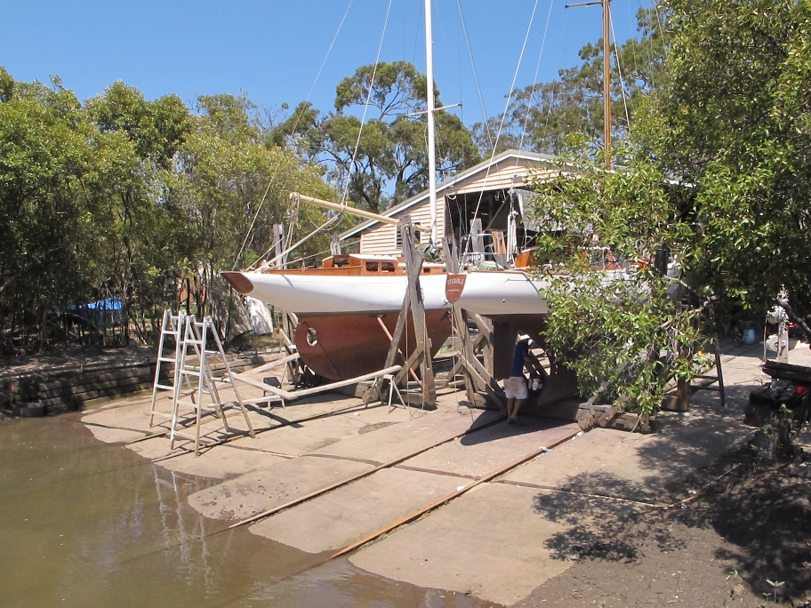

The Yard
Deagon Slipways is located in Cabbage Tree Creek in Brisbane's Sandgate reigon.
Sandgate is known for its extensive yachting and boating scene with it's history dating back hundreds of years.
The yard itself is well protected from the elements, whilst still remaining accessable to larger boats.
The slipway is self-contained with a full range of machinery and equipment for the restoration and maintenance of almost any boat.